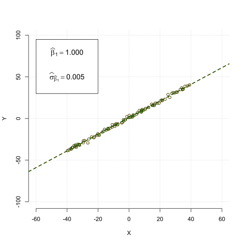
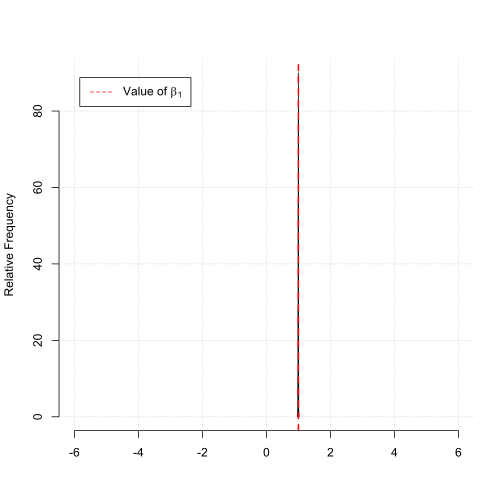
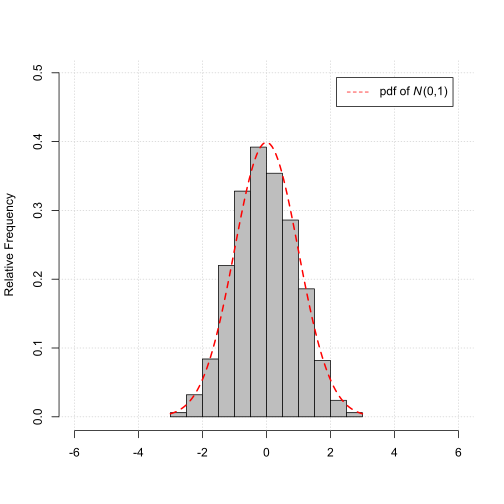

Econometrics and Statistics (520K)
Econometrics and Statistics (520K)
Properties of the OLS Estimator
Motivation
Understand the effect of increasing the sample size \(N\) on the sampling distribution of the ordinary least squares (OLS) estimator for the slope coefficient of a simple linear regression model.
Statistical Model
We are interested in the sampling properties of the OLS estimator \(\widehat\beta_1\) for the slope coefficient \(\beta_1\) of the following simple linear regression model,
$$ \begin{align} Y_i &= \beta_0 + \beta_1 X_i + u_i, \end{align} $$ for \(\beta_0=1\), \(\beta_1=1\) and with, $$ \begin{align} X_i &\sim U_{\left[a,b\right]}, \\ u_i &\sim N\left(0,\sigma_{u}^{2}\right), \end{align} $$ and with different values \(a\), \(b\) and \(\sigma_{u}\).Remember, due to the randomness of the generated sample the outcomes of the samples will vary across sample draws.
Remember, due to the different outcomes of the samples the sample averages will vary across sample draws.
Illustration
Change the number of observations \(N\) to see the effect of the sample size \(N\) on the properties of the OLS estimator for the slope coefficient \(\beta_1\) of the linear regression model above.
Effect of \(X_2\) on \(Y\), i.e., \(\beta_2\)
Correlation between \(X_1\) and \(X_2\), i.e., \(\rho_{X_1 X_2}\)
Scatterplot with Fitted Regression Line
(Based on one sample draw of size \(N\) on the DGP)
Histogram of the OLS estimator for the slope coefficient \(\beta_1\)
(Based on \(1000\) sample draw of size \(N\) on the DGP)
The plot below illustrates the Law of Large Numbers (LLN)
As the sample size \(N\) grows the estimated value \(\widehat{\beta}_1\) gets closer to \(\beta_1\), i.e.,
$$ \begin{align} \widehat{\beta}_1 \overset{p}{\to} \beta_1. \end{align} $$Histogram of the standardized OLS estimator for the slope coefficient \(\beta_1\)
(Based on \(1000\) sample draw of size \(N\) on the DGP)
The plot below illustrates the Central Limit Theorem (CLT)
As the sample size \(N\) grows the distribution of the standardized estimated value,
$$ \begin{align} z_{\widehat{\beta}_1} = \frac{\widehat{\beta}_1^* - \beta_1}{\sigma_{\widehat{\beta_1}}}, \end{align} $$gets closer and closer to the standard normal distribution \(N\left(0, 1\right)\).